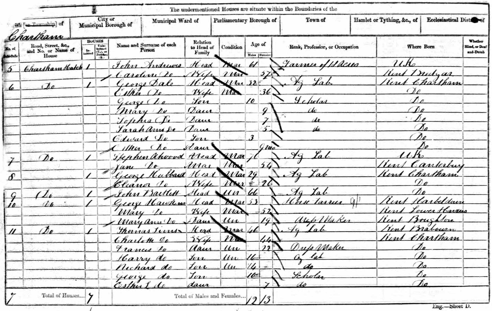

James Spratt 1816 - 1895
[ Home ] | [ Calendar ] | [ Surnames Index ] | [ Errors ] | [ Family History ]An agricultural labourer and the child of William Spratt (a labourer) and Mary Hughes, James Spratt, the great-great-grandfather of Nigel Horne, was born in St Nicholas-at-Wade, Kent, England on 12 May 18161,2,3,4,5,6,7,8, was baptised there on 16 Jun 1816 and also married Sarah Spain (with whom he had 9 children: Eliza, Mary, Emma, Jane, James Henry, John, Charles, William and Alfred, along with 3 surviving children) there on 9 Jan 18429 (Parish Church/St. Nicholas At Wade, Kent, England).
During his life, he was living at Crump's Farm in St Nicholas-at-Wade on 6 Jun 18411 and on 30 Mar 185114; at The Row in St Nicholas-at-Wade on 7 Apr 186112; at Parish Cottage in St Nicholas-at-Wade on 2 Apr 18714 and on 3 Apr 18815; and at The Street in St Nicholas-at-Wade on 5 Apr 18916 (the same place as his father had been living on 7 Apr 1861), when he was living with his daughter Jane, following the death of his wife on 7 Jun 1884.
He died on 18 Nov 1895 in St Nicholas-at-Wade7,8 (apoplexy) and was buried there on 24 Nov 1895 (aged 79yrs. Verified at Margate library 24 Mar 2010)10,11.
Parents
- William was born on 14 May 1789
- Mary was born in 1792
Children
- Mary was born c. Nov 1843
- Jane was born c. May 1847
- James Henry was born c. Feb 1850
- John was born on 26 Mar 1852
- Charles was born c. May 1854
- Alfred was born in Apr/May/Jun 1860
Citations
- 1841 England Census Online publication - Provo, UT, USA: The Generations Network, Inc., 2006.Original data - Census Returns of England and Wales, 1841. Kew, Surrey, England: The National Archives of the UK (TNA): Public Record Office (PRO), 1841. Data imaged from the National
- 1851 England Census Online publication - Provo, UT, USA: The Generations Network, Inc., 2005.Original data - Census Returns of England and Wales, 1851. Kew, Surrey, England: The National Archives of the UK (TNA): Public Record Office (PRO), 1851. Data imaged from the National
- 1861 England Census Online publication - Provo, UT, USA: The Generations Network, Inc., 2005.Original data - Census Returns of England and Wales, 1861. Kew, Surrey, England: The National Archives of the UK (TNA): Public Record Office (PRO), 1861. Data imaged from the National
- 1871 England Census Online publication - Provo, UT, USA: The Generations Network, Inc., 2004.Original data - Census Returns of England and Wales, 1871. Kew, Surrey, England: The National Archives of the UK (TNA): Public Record Office (PRO), 1871. Data imaged from the National
- 1881 England Census Online publication - Provo, UT, USA: The Generations Network, Inc., 2004. 1881 British Isles Census Index provided by The Church of Jesus Christ of Latter-day Saints © Copyright 1999 Intellectual Reserve, Inc. All rights reserved. All use is subject to the
- 1891 England Census Online publication - Provo, UT, USA: The Generations Network, Inc., 2005.Original data - Census Returns of England and Wales, 1891. Kew, Surrey, England: The National Archives of the UK (TNA): Public Record Office (PRO), 1891. Data imaged from The National
- England & Wales, FreeBMD Death Index: 1837-1915 Online publication - Provo, UT, USA: The Generations Network, Inc., 2006.Original data - General Register Office. England and Wales Civil Registration Indexes. London, England: General Register Office. © Crown copyright. Published by permission of the Cont
- Kent, England, Tyler Index to Parish Registers, 1538-1874 Online publication - Provo, UT, USA: Ancestry.com Operations, Inc., 2010. This collection was indexed by Ancestry World Archives Project contributors.Original data - Frank Watt Tyler. The Tyler Collection. Canterbury, Kent, England: The Institute of Herald
- England & Wales, FreeBMD Marriage Index: 1837-1915 Online publication - Provo, UT, USA: The Generations Network, Inc., 2006.Original data - General Register Office. England and Wales Civil Registration Indexes. London, England: General Register Office. © Crown copyright. Published by permission of the Cont
- Public Member Trees Online publication - Provo, UT, USA: The Generations Network, Inc., 2006.Original data - Family trees submitted by Ancestry members.Original data: Family trees submitted by Ancestry members.
- England Deaths & Burials 1538-1991 - Findmypast
- 1861 England, Wales & Scotland Census - Findmypast (was age 40 and the head of the household)
- 1891 England, Wales & Scotland Census - Findmypast (was age 74 and the head of the household)
- 1851 England, Wales & Scotland Census - Findmypast (was age 34 and the head of the household)
- 1841 England, Wales & Scotland Census - Findmypast (was age 25)
- 1881 England, Wales & Scotland Census - Findmypast (was age 64 and the head of the household)
- 1871 England, Wales & Scotland Census - Findmypast (was age 54 and the head of the household)
Media
James Spratt - death certificate
James Spratt - Sarah Spain - marriage certificate
James Spratt - Tyler Index
1841 UK Census

1851 UK Census

1861 UK Census

1871 UK Census

1881 UK Census

1891 UK Census

England & Wales marriages 1837-2008 - BMD/M/1842/1/AZ/000474/087
Canterbury Marriages - GBPRS/CANT/M/97245451/1
England & Wales deaths 1837-2007 - BMD/D/1895/4/AZ/000337/175
Canterbury Baptisms - GBPRS/CANT/B/96800693
1891 England, Wales & Scotland Census - GBC/1891/0005854644
1851 England, Wales & Scotland Census - GBC/1851/0005871301
1841 England, Wales & Scotland Census - GBC/1841/0013960571
Kent, Canterbury Archdeaconry burials - GBPRS/CANT/D/95565577
England Deaths & Burials 1538-1991 - R_276599835
Family Tree

Map
Generated by ged2site. Last updated on Jul 3, 2024